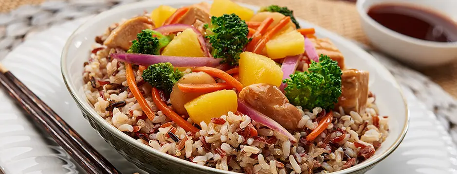

Vegetable-Fry

Quinoa & Vegetable Stir-Fry
Enjoy sweet, savory goodness with our Hawaiian-inspired Chicken & Vegetable Stir-Fry with Rice and Quinoa, ready in just 20 minutes!
Ingredients
- 1 cup quinoa, rinsed
- 2 cups water or vegetable broth
- 1 tablespoon olive oil
- 1 red bell pepper, sliced
- 1 zucchini, sliced
- 1 cup broccoli florets
- 2 cloves garlic, minced
- 2 tablespoons low-sodium soy sauce
- 1 teaspoon sesame oil
- Sesame seeds and chopped green onions (for garnish)
How to make it
- Rinse quinoa thoroughly and cook with water or broth until fluffy (about 15 minutes).
- Heat olive oil in a large pan or wok over medium heat.
- Add garlic and sauté for 1 minute until fragrant.
- Add bell pepper, zucchini, and broccoli; stir-fry for 5 minutes until tender-crisp.
- Stir in cooked quinoa, soy sauce, and sesame oil; mix well.
- Remove from heat and garnish with sesame seeds and green onions.
- Serve warm and enjoy your nutritious meal.